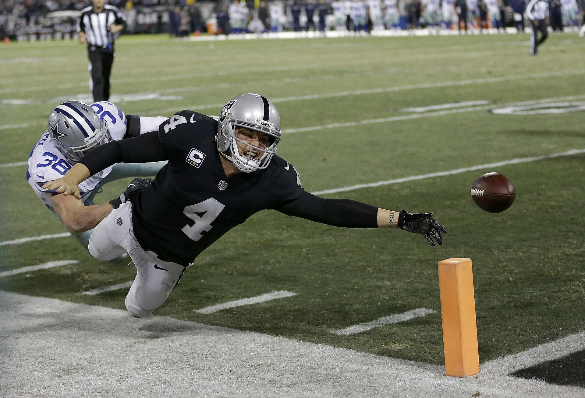
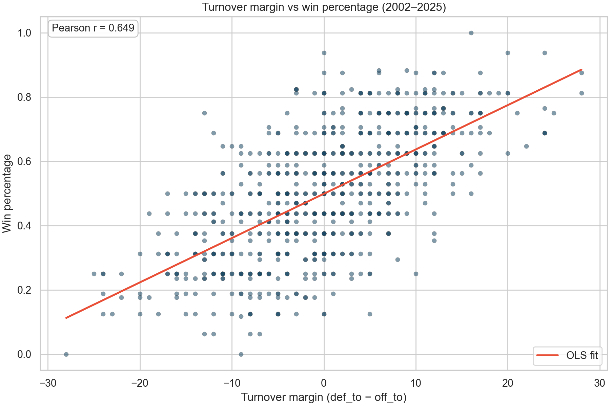
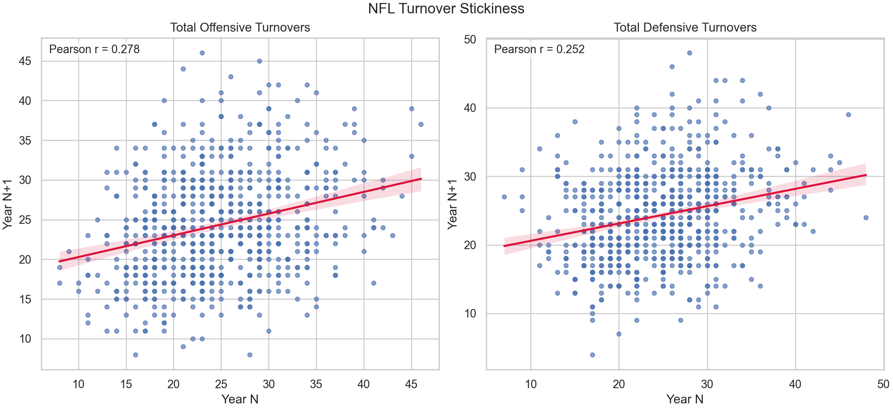
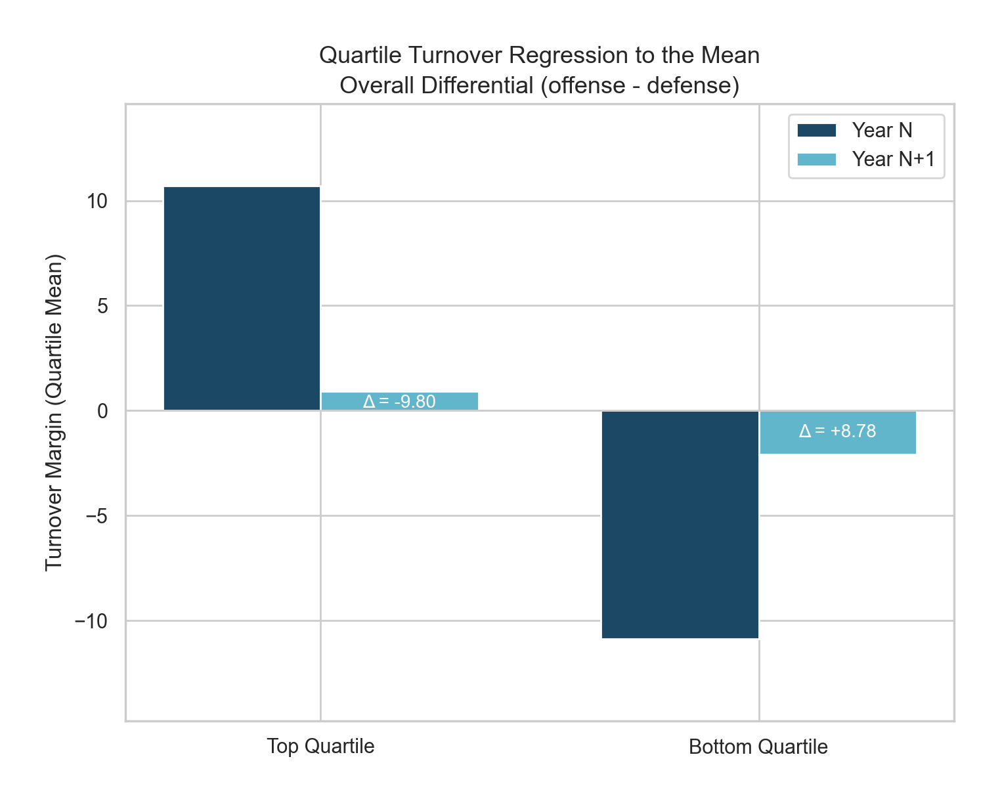
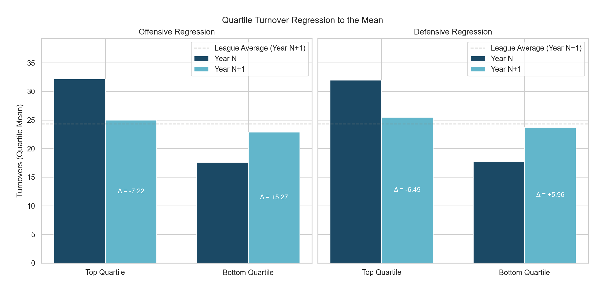
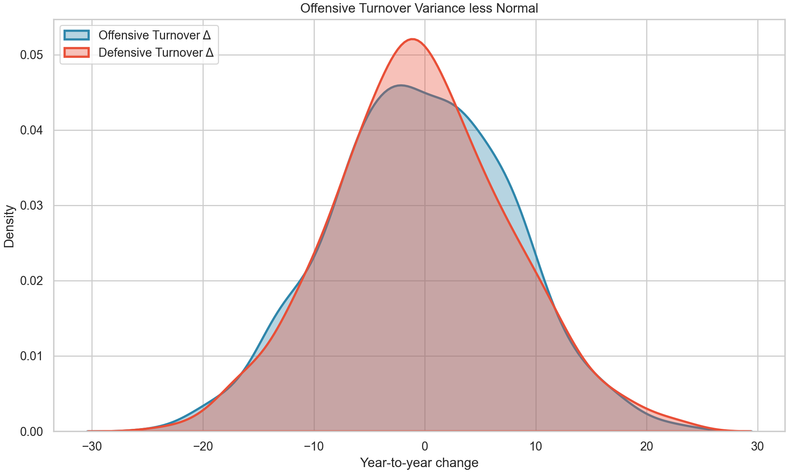
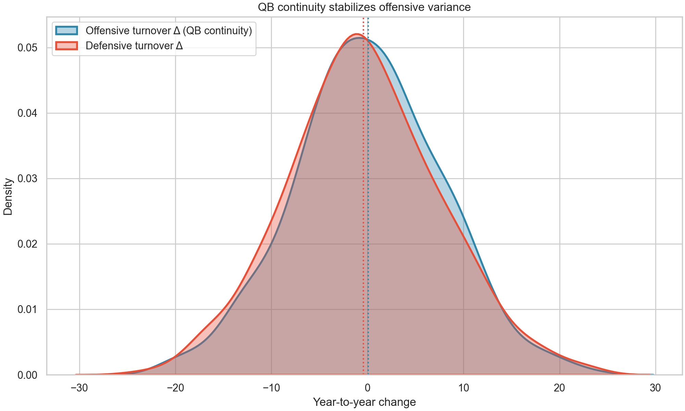
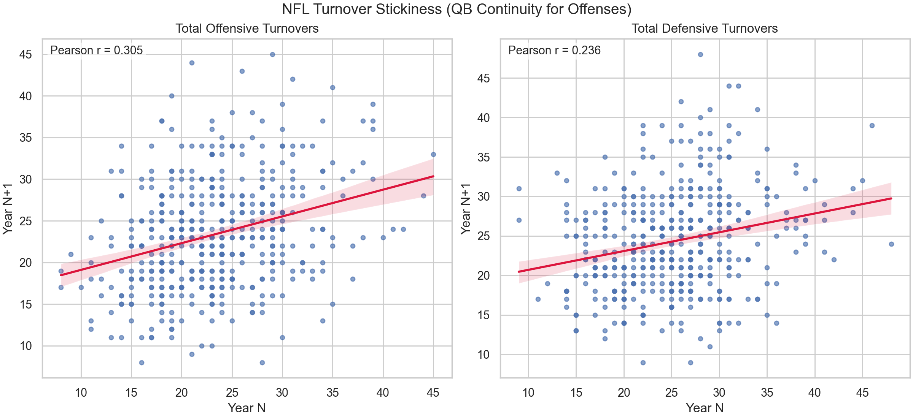

Can NFL Teams Predict Their Turnover Luck?
By Alex Laughlin | June 11, 2026


“Win the turnover battle.” It’s a phrase drilled into us in every sports broadcast, and for good reason. Turnovers are king in the NFL, swinging entire games in a matter of seconds. These single plays can change entire seasons, redefining legacies and changing the courses of careers. The NFL would be a vastly different place today if a few plays had swung the other way; imagine a world in which Malcolm Butler hadn’t intercepted that pass at the goal line, or the 28-3 comeback had been stopped short after a ball intended for Edelman stuck in a Falcon defender’s hands. Moments like these are what separate historic teams from those that will be lost to history. So, how can teams build their rosters to tilt the turnover battle in their favor?

Unfortunately, turnovers are incredibly hard to control and predict. Trying to limit them too much requires having a passive offense, and focusing on forcing more turnovers leads to giving up more big plays. Because of these factors, teams only plan around turnovers situationally. Additionally, luck plays a huge role in whether a play ends in a turnover or not; the way the ball bounces in the air is often the decider, having nothing to do with either team’s skill.
Furthermore, research into year-over-year turnover variance has revealed that turnovers aren’t “sticky” (they don’t stay constant season to season). The worst teams in terms of turnovers get better, and the best teams get worse – they both exhibit regression to the mean. This phenomenon has been termed “turnover regression,” supporting the argument that teams that have great seasons in forcing or limiting turnovers aren’t actually any better, but rather, luckier. The 2024 Chargers, for example, had only 9 turnovers over the course of the regular season, the third lowest mark of any team in the last twelve seasons. They subsequently turned the ball over four times in their first playoff game. Their regular season results would suggest that they were an elite turnover-limiting team, but their playoff game suggests the opposite – the truth is that they went on an extremely lucky streak followed by an extremely unlucky game.
Just because turnover regression exists doesn’t mean that all turnovers are luck, though. While luck does play a role, if we can identify which turnovers are stickier than others, we can get ahead of the curve in free agency and the draft. Consider a scenario in which a team is hoping to break into the playoff hunt in the next season. Their defense was above-average in forcing turnovers last season, but their offense turned the ball over too many times. Should the front office prioritize cutting down on the offense’s turnovers? Or should they hope for some positive regression on offense and invest in the defense to ensure that unit performs strongly again the next year? Which side of the ball are turnovers stickier to, and when?

To answer this, we can look at how turnovers change year-over-year for individual units. Above are plots of every NFL team’s total offensive and defensive turnovers for each season since 2002, comparing the number of turnovers from one season to the next. Both offense and defense show weak positive correlations, but the correlation is slightly stronger in offense. Looking at it from a turnover regression standpoint gives us another interesting result:

If we average the turnover margins of the top and bottom quartiles of teams in a given year, and then look at those same teams the next year, we see quite the fall-off. The top 8 teams in turnover differential in one year lose an average of nearly 10 turnovers each the next! This puts it just above the NFL average. Looking at the bottom quartile of the league, we see a similar trend where the worst teams in the league also tend towards the league average the next season. This tells us that these league-best and worst teams aren’t actually great or terrible at managing turnovers, but that their results are largely due to luck.

Isolating regression between offense and defense gives us similar results. The teams that turn the ball over the most (top quartile) in one year aren’t likely to do the same the next, and the same for teams that turn the ball over the least. The inverses are true for defense, with all grouped units within the top and bottom quartiles showing significant regression to the mean. Does this mean that turnovers are completely random, though?

If we look at the distributions of offensive and defensive year-to-year turnover deltas, we can see something interesting. Defensive turnover change is a normal-looking bell curve, but the offensive curve is of an abnormal shape, seemingly to be hiding some strange pattern. Indeed, this is because there’s a significant factor we haven’t accounted for: the quarterback.
In the NFL, the quarterback is the most important player on the football field. It makes sense, then, that they have something to do with turnovers. We can probably attribute a significant portion of offensive turnovers to who’s playing quarterback. So, what would happen if we just looked at the seasonal turnover changes of teams that had the same (snap leader at) quarterback in both years?

Adjusting for quarterback continuity normalizes our distribution, bringing it to the bell curve that we want to see! Interestingly, though, offensive turnovers become stickier from season to season. Offense and defense share similar distributions after adjusting for QB continuity, but this is due to it being a repeatable factor rather than just noise, like much else in turnovers.

The season-over-season correlation for offensive turnovers is now clearly better than that of defense after considering quarterback continuity. This, combined with our distribution shift, implies that QB continuity is the largest identifiable driver of offensive turnover stickiness.
These findings about QB continuity matter in the NFL, especially for team-building purposes. Returning to the proposed scenario earlier, how should we manage a team that was good at forcing turnovers but turned the ball over too often offensively? Offensively, assuming we’re keeping the same quarterback, we can expect some natural positive regression. Just regression won’t do all the work for us, though – we should still expect to have a below-average offensive turnover amount if nothing changes. Defensively, we need to acknowledge that we probably won’t get as many turnovers as last season. If we just let both units regress naturally, based on offensive turnovers being stickier than defensive turnovers, our turnover margin would likely get worse the next year. In order to avoid this, we need to focus on improving our offense. Upgrading offensive positions of need in order to get that unit to average or better, while just giving the defense some maintenance work, is the best way to maximize our expected turnover margin for the next season.
Being the major sports league that plays the fewest games, the NFL also has the most impactful individual plays. The teams that figure out how to harness turnovers, the biggest swing plays in all of sports, are the teams that make history. Being able to see through the tangled web that is statistics in the NFL and identifying what’s real and what’s luck may be the largest advantage an NFL front office can have.